Sigiriya
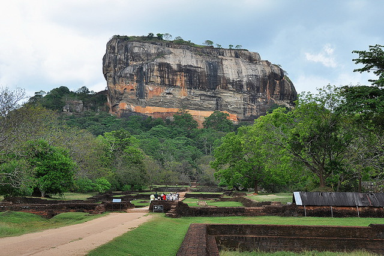
Sigiriya alias Sinhagiri is a large fortress.Also it is a wonderful place.It is about 200 metres(600 feets) high. It is located in Matale district between the towns of Dambulla and Habarana which are in the Central Province. Its view astonishes the visitors with the unique harmony between the nature and human imagination. King Kashyapa(477 – 495 CE) selected this area for his new capital.Also he built his palace on this rock and decorated the sides from frescoes. When anyone enter to this rock he/she can see a gateway in the form of an enormous lion. That is why it is called Sinha-giri. This royal palace was abandoned after the king's death.
Then it was used as a buddhist monastery until the 14th century. After seeing the wonderful construction, ancient urvban planning and the special location of Sigiriya the UNESCO declared it as a world heritage site in 1982. If anyone went to Sigiriya, around the rock anyone can see ruins of old buildings, ponds, gardens, moat, natural water fountains and wonderful irrigation sytems. While climbing to sigiriya rock sigiriya frescoes can be seen.The most renowned is the Sigiriya Rock Paintings or Frescoes of Sigiri Damsels locally called as ' Sigiri Apsaras' painted on a Western Rock face cavity about 100 meters high from the rock base . There now remains around 21 paintings of Sigiriya Damsels but there had been around five hundred paintings during King Kassapa's time along several other places of the same Western Rock face. After seeing this next sigiri graffities can be seen on the mirror wall.
By today Sigiriya has become a main tourist destination which the tourist attraction is gained. More than 2000 people comes usually to see this palce per day. Therefore many tourist hotels have been built around Sigiriya fortress. Since long time ago people are arranging trips not only to Sigiriya but also to Habarana and Dambulla.
 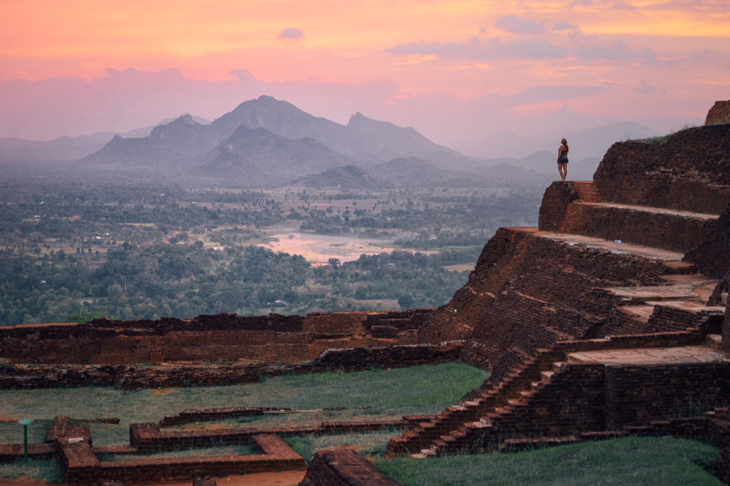
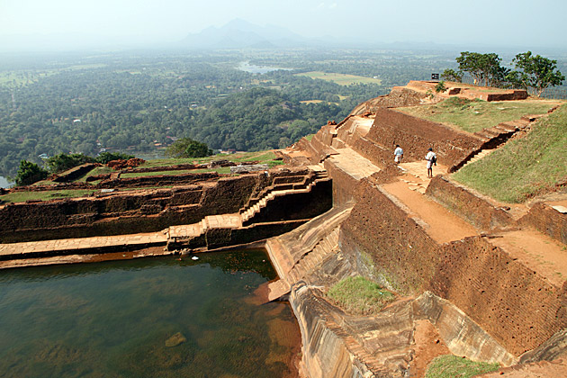
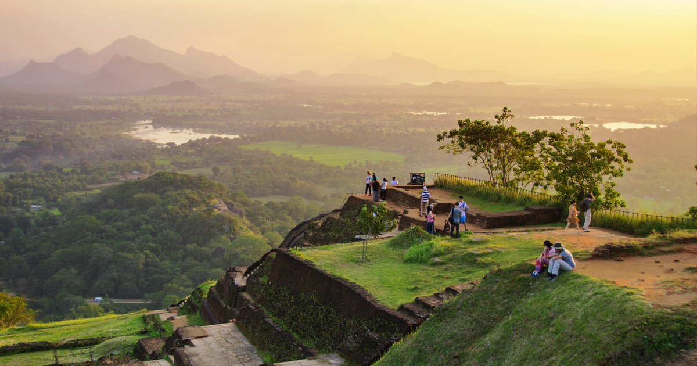
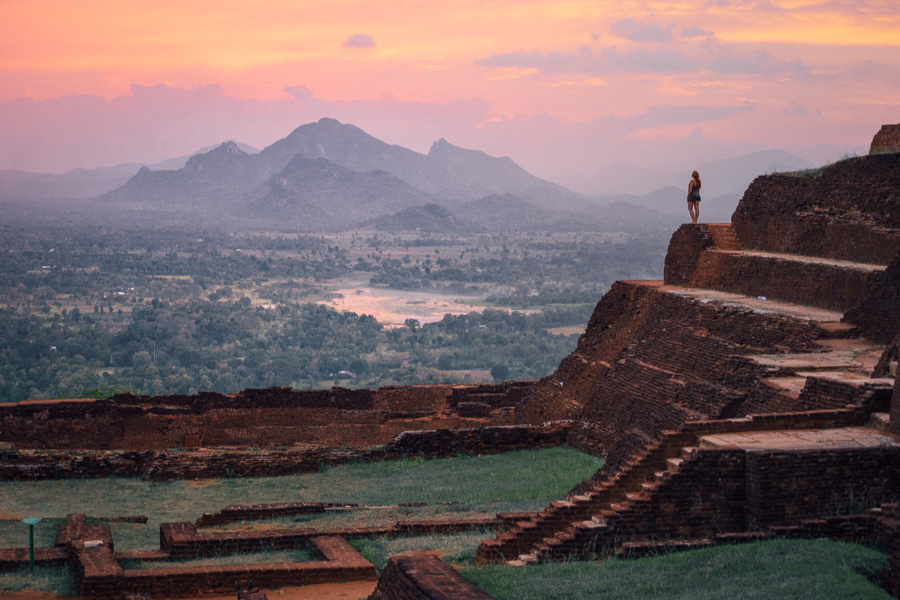
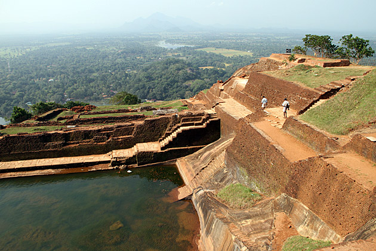
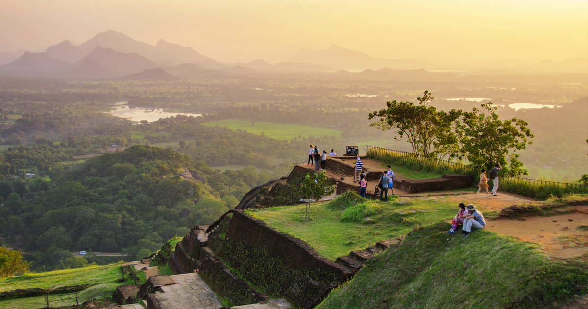

 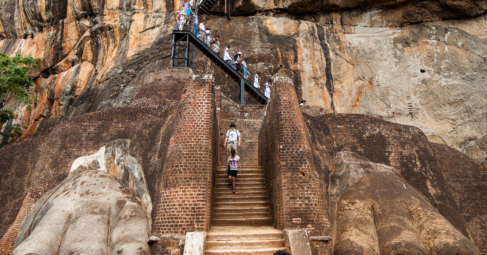
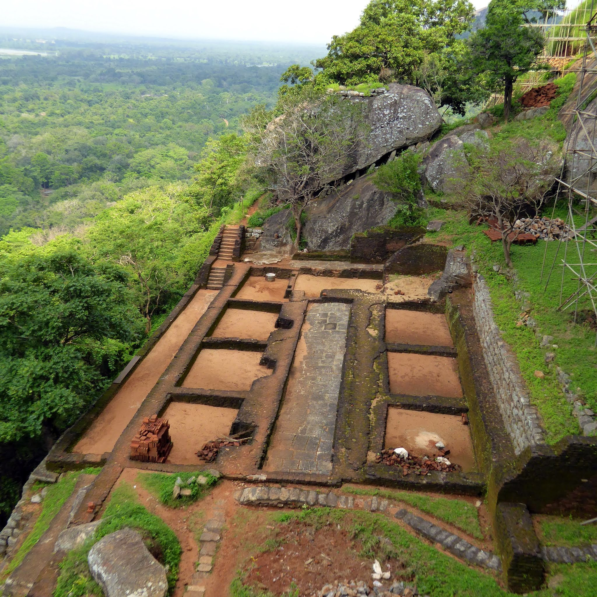
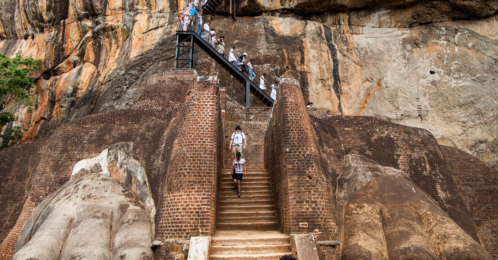
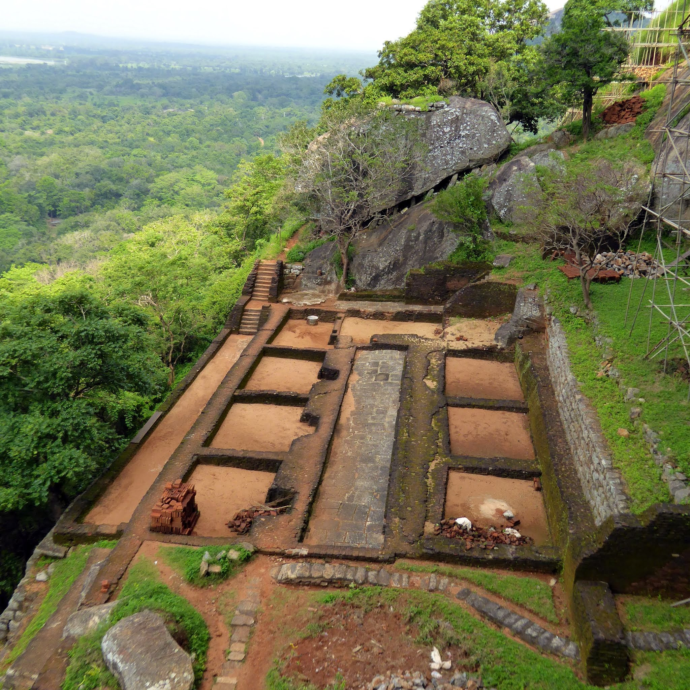